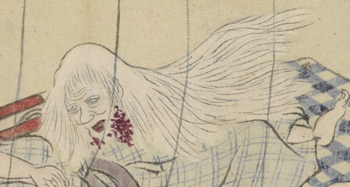

首；クビ

蚊帳の内で寝る平太郎を老婆の首がのぞき込む。白髪の乱髪で首回りには血が滴っている。青白い顔である。
出典：親書誌：U426_nichibunken_0451：稲生家妖怪傳巻物／日付：2021／資源識別子：U426_nichibunken_0451_0001_0005
Copyright (c)2010- International Research Center for Japanese Studies, Kyoto, Japan. All rights reserved.